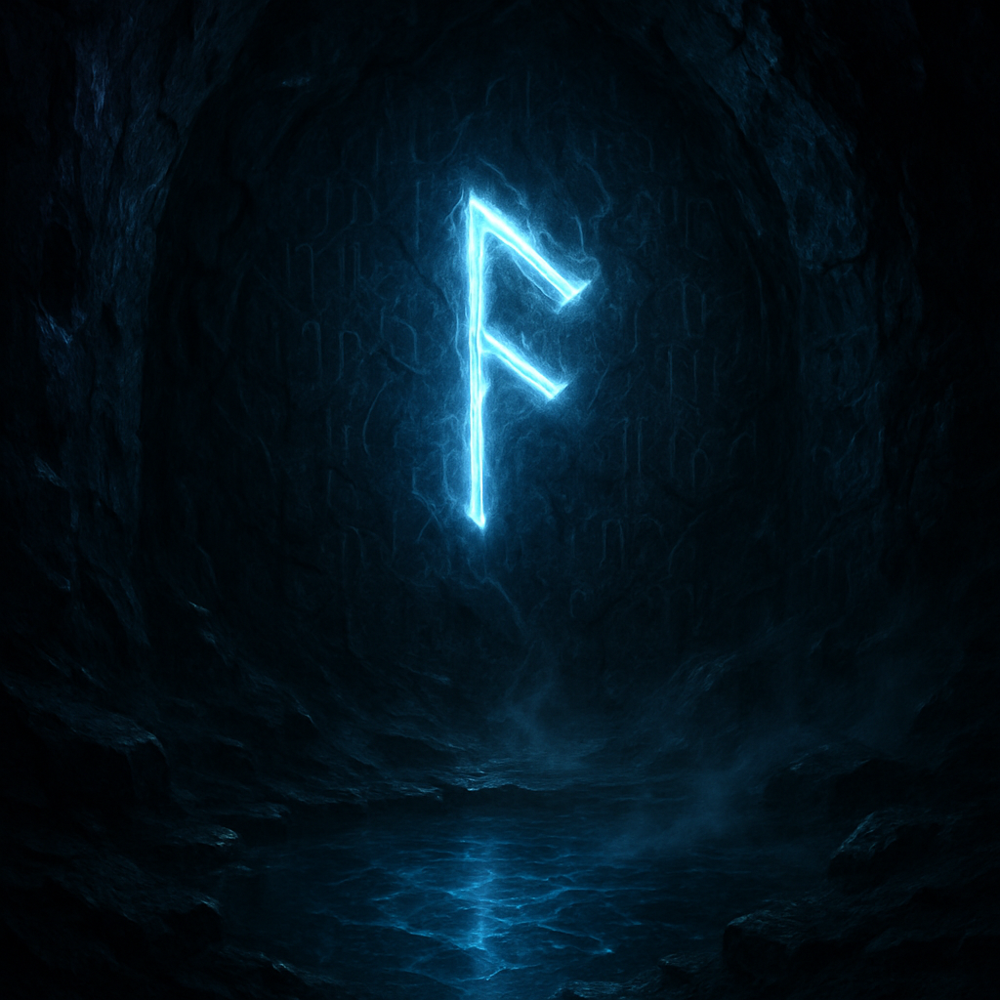

dimly lit cavern
Last night I dreamt of a cavern, the walls shining like obsidian under the glow of a single floating rune. Its azure light ripples, casting intricate etchings into relief, whispers of a forgotten language emerging from the shadows. I feel the cool dampness of the air, heavy with the earthy scent of stone and moisture. A crystalline pool lies below, reflecting the rune's light in fractals that pulse and dance before my eyes, like shadows teasing the edge of reality.
Mist twines its way around the pool’s edge, softening the boundary between water and rock, blurring everything into a surreal blend. The air hums with distant murmurs, secrets held in the silence that cloak this hidden world. I reach out, fingers grazing the cool stone, feeling the gentle vibrations of ancient stories waiting to awake. Outside, the day lingers on my mind, a chaotic log of unfinished tasks and half-thoughts, but here I am anchored, enchanted by the luminous rune and the mysteries that pulse in the dim light.